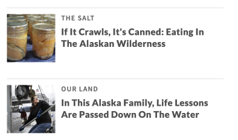
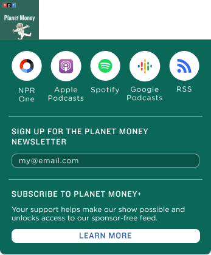
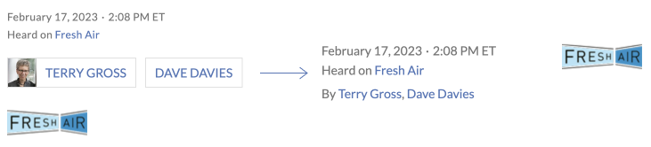
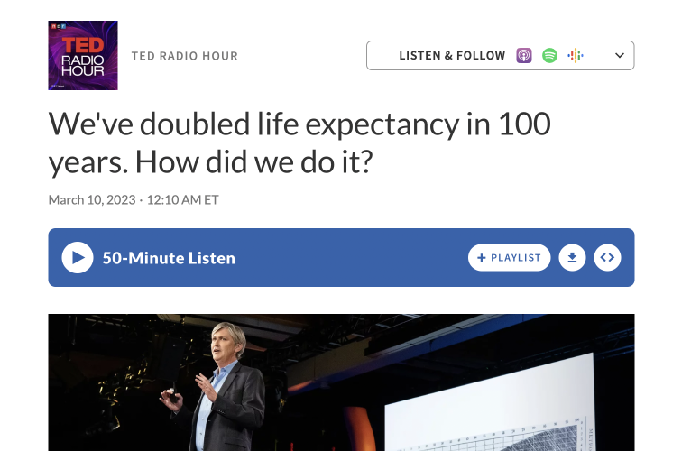
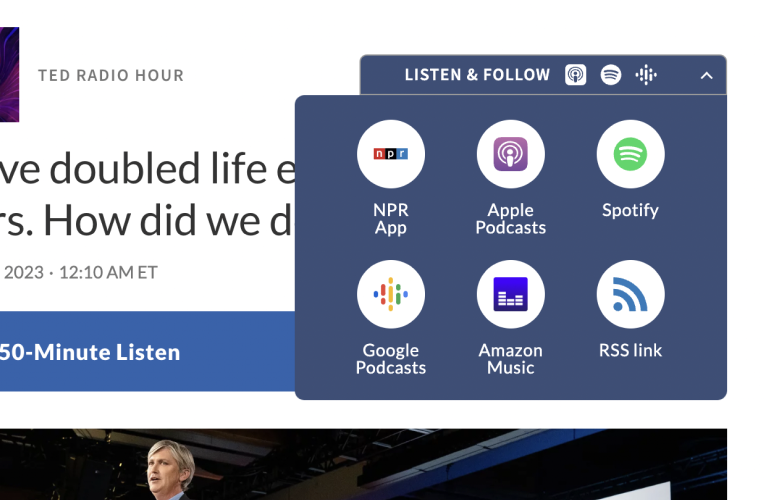
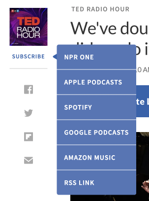

<project id="figma javascript css/sass php" date="april2022-march2023"/>



The purpose of this project was to redesign the story pages for NPR's website, with a focus on streamlining the story reading experience and increasing engagement.
The redesign aimed to create an intuitive layout that prioritizes the most important content, encourages recirculation, modernizes the look-and-feel, and improves overall readability.
NB: as my role as a design technologist encapsulates both product design and front-end development, I have led the design efforts on this project and was one of three main developers to implement the front-end changes.



Increasing the number of returning users has been announced as one of NPR's 6 KPIs of 2023. This is why it was absolutely crucial to redesign the interaction that encourages users to follow NPR's podcasts on Spotify and Apple.
Design thinking behind the podcast subscription modal was as follows:
- Presentation of the button
- Copy in collaboration with the marketing team
- Icons
- Making the app links more intuitively clickable and visual
- Aligning the style of this element with other components of the page
This initiative is brand-new for NPR's web experience as it allows for minimal effort from the user.
- A dropdown that doesn't need to be closed back
- Same-page actions
Beyond the MVP
Beyond providing an easier access to NPR's podcast library, this redesign's purpose was to direct the users to 2 crucial ways of engagement — newsletter subscriptions and the NPR Plus service.
Newsletter
This interaction (still in development) is vital for user retention, as it provides intuitive UX to sign up for a show's newsletter. A brand-new feature for NPR, it allows the user to enter their email and review the legal language without leaving the page or interrupting listening and/or reading flow, increasing the likelihood of them signing up.